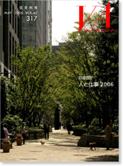

|

|
MAY 2006 VOL.42 317
日建設計 人と仕事2006
|
|
定価 3,300円（税込）
ISBN 4-901772-26-0
|
|
| 2006対談 福島敦子 キャスター・エッセイスト × 中村光男 日建設計代表取締役社長 |
|
|
| 佐藤義信 ： |
伝統的技能と現代技術が融合した日本の建築を目指して |
| 設計部門 |
京都迎賓館 |
| 三谷康彦 ： |
日本の美意識「花鳥風月」を、ランドスケープに取り込む |
| 設計部門 |
京都迎賓館ほか |
| 江副敏史 ： |
無垢の素材でホールをつくる |
| 設計部門 |
兵庫県立芸術文化センター |
| 土屋 中 ： |
さまざまな制度を活用した再生で、成熟した街へ |
| 設計部門 |
平和ビル 岐阜 島屋リニューアルほか |
| 木村清晴 ： |
異なる立場の考えを間に立ってまとめていく |
| 監理部門 |
NEC玉川ルネッサンスシティ |
| 新田恵一 ： |
街が良くなるのをクライアントと一緒に喜ぶ |
| 開発・計画部門 |
栄三丁目6番街区市街地再開発 |
| 若林 亮 ： |
視線がつながる吹き抜け空間で建物の中に街を |
| 設計部門 |
栄三丁目ビルディング・LACHICほか |
| 土屋 潔 ： |
短期間で高品質の建物を実現する |
| 設計部門 |
トヨタ自動車事務本館 |
| 多賀謙蔵 ： |
2度の地震体験から多くのことを学びました |
| 構造設計部門 |
関電ビルディングほか |
| 中村晃子 ： |
神社が以前よりも立派に見えるように |
| 設計部門 |
虎ノ門琴平タワー |
| 赤司博之 ： |
シンプルなシステムで使いやすくわかりやすい空港を |
| 設計部門 |
中部国際空港 旅客ターミナルビル |
| 児玉 謙 ： |
復元もクリエイティブに |
| 設計部門 |
神戸栄光教会 |
| 木村雅一 ： |
彫りの深い石貼りのカーテンウォール |
| 設計部門 |
日本生命丸の内ビル |
| 中分 毅 ： |
これからのオフィスが目指す3つの「E」 |
| 日建設計マネジメントソリューションズ 日本生命丸の内ビル 日本生命東京本部オフィス |
| 常木康弘 ： |
上下逆転の発想を可能にしたのは中間層免震 |
| 構造設計部門 |
汐留住友ビル |
| 杉山俊一 ： |
公共施設で日常的なにぎわいづくりを図る |
| 設計部門 |
秋田拠点センター AL☆VE |
| 大谷弘明 ： |
写真には写らないものを大切にしたい |
| 設計部門 |
京都大学医学部百周年記念施設 芝蘭会館 |
| 岡本 隆 ： |
コミュニケーションを促す大学のかたち |
| 設計部門 |
同志社大学 寒梅館 |
| 岩堀幸司 ： |
変わってきた病院、特化・療養環境・フレキシビリティ |
| 設計部門 |
岩手県立二戸病院ほか |
| 渡辺由紀 ： |
住宅を設計するような細やかな気配りを |
| 設計部門 |
ロックビレイビル |
| 川島克也 ： |
時のうつろいや季節の変化が感じられる病室空間 |
| 設計部門 |
財団法人慈愛会 奄美病院 |
| 堀川 晋 ： |
室温29ｼCでも充分に快適な環境はつくれる |
| 設備設計部門 |
財団法人慈愛会 奄美病院 |
| 亀井忠夫 ： |
視線が抜ける透明感のあるさりげない建築をち |
| 設計部門 |
TK南青山ビル |
| 指田孝太郎 ： |
人の顔が見える空間が求められている |
| 設計部門 |
オムロン京阪奈イノベーションセンタ |
| 野原文男 ： |
簾や縁側の技術を現代建築に応用する |
| 設備設計部門 |
日建設計東京ビル（評価） |
| 中井 進 ： |
会議の合間を過ごすロビー空間が大切 |
| 設計部門 |
福岡国際会議場 |
| 浜田明彦 ： |
インターネットではできないことをエコキャンパスで |
| 設計部門 |
青山学院大学相模原キャンパス |
| 安 昌寿 ： |
生活者にとって快適な「普通のいい街」 |
| 開発・計画部門 |
アイガーデンエア |
| 岩崎克也 ： |
世代を超えた交流の場を |
| 設計部門 |
高根町しらかば保育園・ 高根町みのるの里 特別養護老人ホーム みのる荘 |
| 櫻井 潔 ： |
光と風を感じながら人々が出会う空間を |
| 設計部門 |
泉ガーデンほか |
| 神成 健 ： |
豊かな自然環境だからこそ妥協せずにつくる |
| 設計部門 |
ポーラ美術館 |
| 富樫 亮 ： |
西日を遮りながら眺望を楽しめる窓まわり |
| 設計部門 |
地球環境戦略研究機関（IGES） |
| 横谷英之 ： |
安藤さんとのコラボレーションは刺激的でした |
| 設計部門 |
国立国会図書館 国際子ども図書館 |
| 中本太郎 ： |
繁華街に立つ本社ビルのあり方 |
| 設計部門 |
ホギメディカル本社ビル |
| 陸 鐘驍 ： |
この10年における上海の変貌とこれから |
| 設計部門 |
上海信息大楼ほか |
| 茅野秀真 ： |
水辺の魅力的な複合都市空間を求めて |
| 設計部門 |
晴海アイランド トリトンスクエア |
| 塩井保則 ： |
バリアフリーの設計手法を問い直す |
| 設計部門 |
国際障害者交流センター“ビッグ・アイ” |
| 吉野 繁 ： |
複雑な形を解く鍵は単純化 |
| 設計部門 |
日本科学未来館 |
| 須田 豊 ： |
すっきりとした空間をすっきりとつくる |
| 監理部門 |
日本科学未来館 |
| 妹尾賢二 ： |
先端科学を支える建築の技術 |
| 設計部門 |
海洋科学技術センター 地球シミュレータ施設 |
| 小比賀一史 ： |
寒冷地にふさわしいコンクリートの表現 |
| 設計部門 |
霞城セントラル |
| 山梨知彦 ： |
都心居住とオフィスの共存を図る |
| 設計部門 |
飯田橋ファーストビル・ファーストヒルズ飯田橋 |
| 小堀 徹 ： |
守りと攻めの両面で構造設計に取り組む |
| 構造設計部門 |
さいたまスーパーアリーナ |
| 伊香賀俊治 ： |
環境配慮型建築を広めるために性能評価ツールを開発 |
| 設備設計部門 |
CASBEE |
| 五十君興 ： |
空港の改修設計は「不易流行」の精神で |
| 設計部門 |
成田国際空港 第1旅客ターミナルビル |
| 青木 伸 ： |
NCMはクライアントの価値創造に貢献します |
| 日建設計コンストラクション・マネジメント 名古屋伊藤忠ビルリノベーションプロジェクト |
| 村尾忠彦 ： |
挑戦的なオフィス設計の伝統を引き継ぐ |
| 設計部門 |
ミッドランドスクエア |
| 宮川 浩 ： |
ツインコア形式を発展させた超高層ビル |
| 設計部門 |
北京電視中心 |
| 大松 敦 ： |
パソコンでいえばOSにあたるPMの仕事 |
| 開発・計画部門 |
東京ミッドタウン |
| 栄 千治 ： |
ユーザーの活力へ繋がるITインフラの提供 |
| 設備設計部門 |
統合IPネットワーク |
| 二宮 彰 ： |
オープンで透明な文化財の修復工事を |
| バリューマネジメント部門 東本願寺 真宗本廟両堂等御修復御影堂工事 |
|
| 日建設計の取材を終えて 磯 達雄 |
|
| 建築概要 |
|
| 奥付 |
| 連載 ていじ手帳 伊藤ていじ |
| VA Information |
|